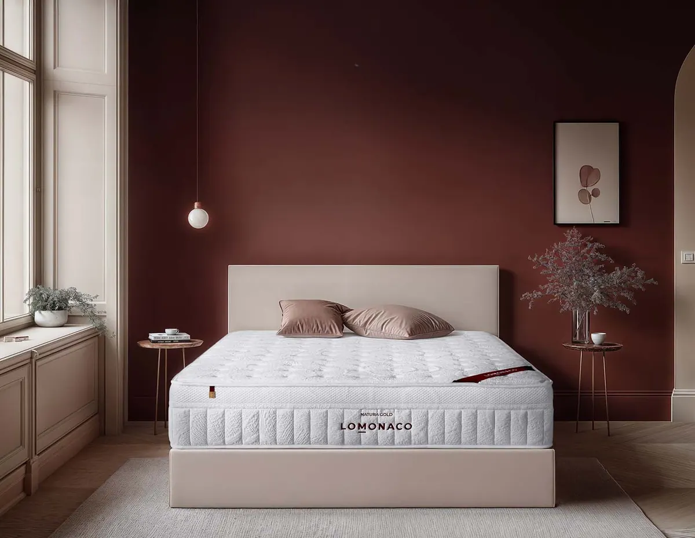

¿Qué firmeza de colchón necesito según mi peso y mi postura?

La firmeza es lo primero que hay que acertar al elegir colchón, y depende sobre todo de dos cosas: cuánto pesas y en qué postura duermes. En esta guía te damos la tabla para decidir y te decimos qué colchón de nuestro catálogo encaja en cada caso.
Respuesta rápida
La mayoría de personas descansa mejor en un colchón de firmeza media o media-firme. Como regla general:
- Menos de 60 kg: firmeza media con mucha adaptabilidad.
- Entre 60 y 90 kg: firmeza media-firme.
- Más de 90 kg: firmeza alta con un núcleo que no se hunda.
Si duermes de lado, prioriza la adaptabilidad; boca arriba, el equilibrio; y boca abajo, la firmeza.
¿Qué es la firmeza de un colchón?
La firmeza de un colchón es la sensación de resistencia que notas al tumbarte: cuánto cede la superficie bajo tu peso. No es lo mismo que la dureza, que es una medida física del material. Dos colchones con materiales distintos pueden dar la misma sensación de firmeza.
La firmeza va siempre unida a otra cualidad, la adaptabilidad: la capacidad del colchón para amoldarse a las curvas del cuerpo (hombros, cadera, zona lumbar) y repartir la presión. Por eso en las fichas de nuestros colchones damos los dos valores, en una escala de 0 a 100.
Consejo del Asesor del Descanso. Un colchón firme no es mejor por ser firme. Lo que buscas es que tu columna quede recta, sin hundirse en la cadera ni quedarse “flotando” en la zona lumbar. Eso se consigue combinando la firmeza adecuada con buena adaptabilidad.
¿Por qué se recomienda la firmeza media?
Porque es la que mejor mantiene la columna alineada y la que más alivia el dolor de espalda, según los estudios. Un colchón demasiado firme presiona hombros y cadera; uno demasiado blando deja que la columna se curve.
El estudio de referencia es un ensayo clínico español publicado en The Lancet en 2003 por la Fundación Kovacs. Comparó colchones firmes y de firmeza media en personas con dolor lumbar crónico, sin que supieran qué colchón tenían. Quienes durmieron en un colchón de firmeza media tuvieron aproximadamente el doble de probabilidades de mejorar su dolor que quienes durmieron en uno firme.
- 313personas con dolor lumbar participaron en el ensayo de 2003
- 2×más probabilidad de mejorar el dolor con firmeza media
- 39estudios revisados en 2021 llegan a la misma conclusión
Una revisión científica de 2021 con 39 estudios lo confirmó: el colchón de firmeza media es el que mejor combina comodidad, calidad del sueño y alineación de la columna. Dentro de esa franja media, tu peso y tu postura deciden si te conviene un punto más blando o más firme.
Esta guía es orientativa. Si tienes una lesión o un dolor de espalda persistente, consulta con un profesional sanitario antes de elegir colchón.
¿Qué firmeza de colchón necesito según mi peso?
Cuanto más pesas, más firmeza necesitas para que el colchón no se hunda en la zona de la cadera. Las personas ligeras necesitan lo contrario: un colchón que ceda lo suficiente para adaptarse a ellas.
| Tu peso | Firmeza recomendada | Por qué | Tipo de colchón que encaja |
|---|---|---|---|
| Menos de 60 kg | Media, con mucha adaptabilidad | El cuerpo hunde poco: si el colchón es muy firme, apoya solo en hombros y cadera. | Colchón de látex (Natura Látex) |
| Entre 60 y 90 kg | Media-firme | Es el rango de la mayoría: necesita soporte y adaptación a partes iguales. | Colchón de muelles ensacados (Natura Gold) |
| Más de 90 kg | Firme, con núcleo resistente | Evita que la cadera se hunda y que el colchón se deforme antes de tiempo. | Colchón viscoelástico (Natura Visco) o colchón 100% látex (Gran Natura) |
Rangos orientativos. Si estás en el límite entre dos tramos, decide por tu postura habitual.
¿Dormís en pareja con pesos muy distintos? Elige la firmeza pensando en la persona de más peso y busca un colchón con buena independencia de lechos, para que los movimientos de uno no despierten al otro. Los núcleos de muelles ensacados, como el del Natura Gold, están pensados precisamente para eso.
¿Y según la postura en la que duermo?
De lado necesitas más adaptabilidad, para que hombro y cadera se hundan lo justo. Boca arriba, firmeza media que sostenga la zona lumbar. Boca abajo, más firmeza, para que la pelvis no se hunda y arquee la espalda.
- Si duermes de ladoEs la postura más habitual. Busca firmeza media con alta adaptabilidad: el colchón tiene que dejar que hombro y cadera entren un poco para que la columna quede recta. En nuestro catálogo, el más adaptable es el Natura Látex, un colchón de látex con muelles ensacados.
- Si duermes boca arribaLa clave es que la zona lumbar no quede en el aire ni se hunda. Una firmeza media-firme con buen soporte, como la de un colchón de muelles ensacados y viscoelástica como el Natura Gold, mantiene la curva natural de la espalda.
- Si duermes boca abajoNecesitas el colchón más firme de tu rango de peso: si la pelvis se hunde, la espalda se arquea y se carga la zona lumbar. Nuestros modelos más firmes son el Natura Visco, un colchón viscoelástico de firmeza media-alta, y el Gran Natura, de 100% látex.
- Si cambias mucho de posturaElige un colchón equilibrado entre firmeza y adaptabilidad, que no te frene al girarte. Los muelles ensacados y el látex reaccionan rápido al movimiento.
Tabla de firmeza por peso y postura
Cruza tu peso con tu postura habitual para saber qué firmeza te conviene:
| Postura | Menos de 60 kg | 60 – 90 kg | Más de 90 kg |
|---|---|---|---|
| De lado | Media | Media | Media-firme |
| Boca arriba | Media | Media-firme | Firme |
| Boca abajo | Media-firme | Firme | Firme |
| Varias posturas | Media | Media-firme | Firme |
En cualquier caso, la firmeza debe ir acompañada de buena adaptabilidad para repartir la presión.
La firmeza de los colchones LOMONACO
Nuestros cuatro colchones están entre 75 y 85 sobre 100 de firmeza: la franja media y media-firme que recomiendan los estudios. Lo que cambia entre ellos es la adaptabilidad y los materiales.
Firmeza y adaptabilidad según la ficha de cada colchón (escala 0 – 100)
Natura Visco
Firmeza · 85
Adaptabilidad · 70
Gran Natura
Firmeza · 85
Adaptabilidad · 100
Natura Gold
Firmeza · 80
Adaptabilidad · 80
Natura Látex
Firmeza · 75
Adaptabilidad · 85
| Característica | Natura Visco | Gran Natura | Natura Gold Más vendido | Natura Látex |
|---|---|---|---|---|
| Firmeza (0 – 100) | 85 · media-alta | 85 · media-alta | 80 · media-firme | 75 · media |
| Adaptabilidad (0 – 100) | 70 | 100 | 80 | 85 |
| Núcleo | HR | 100% látex | Muelles ensacados | Muelles ensacados |
| Capas sobre el núcleo | Viscoelástica y HR Confort | HR Soporte | Viscoelástica y HR Confort | Látex, algodón y HR |
| Altura | 25 cm | 24 cm | 26 cm | 30 cm |
| Ideal para | Más de 90 kg, boca abajo | Más de 90 kg que buscan acogida | 60 – 90 kg, parejas | Menos de 60 kg, de lado |
Firmeza, adaptabilidad, núcleo y altura según la ficha técnica de cada modelo. Todos tienen 10 años de garantía.

Natura Visco
- Firmeza media-alta
- Viscoelástica sobre núcleo HR
- 25 cm de altura

Gran Natura
- Núcleo 100% látex
- La máxima adaptabilidad
- 24 cm de altura

Natura Gold
- Muelles ensacados y viscoelástica
- Firmeza media-firme
- Ideal para parejas

Natura Látex
- Látex sobre muelles ensacados
- Firmeza media, muy adaptable
- 30 cm de altura
¿Dudas entre dos firmezas? Te ayudamos a decidir
Cuéntale a un Asesor del Descanso tu peso, tu postura y si duermes en pareja, y te recomendará el colchón que mejor encaja contigo. Es gratis y sin compromiso.
Hablar con un asesorColchones¿Qué pasa si me equivoco de firmeza?
Que te despertarás con molestias o dormirás peor. Antes de descartar el colchón, date unas semanas de adaptación: el cuerpo tarda en acostumbrarse a una superficie nueva. Si aun así no es para ti, en LOMONACO tienes 14 noches de prueba para devolverlo.
Señales de que es demasiado blando
- Te hundes en la zona de la cadera
- Te despiertas con molestias en la zona lumbar
- Te cuesta darte la vuelta o levantarte
- Notas un hueco donde duermes
Señales de que es demasiado firme
- Se te duermen el hombro o el brazo de lado
- Notas presión en hombros y cadera
- La zona lumbar queda en el aire boca arriba
- Cambias de postura muchas veces por la noche
Ten en cuenta también la base: el mismo colchón se nota más firme sobre una base tapizada o un canapé que sobre un somier de láminas, que tiene más flexibilidad. Antes de cambiar de colchón, comprueba que la base está en buen estado.
- Dale tiempoDuerme en él varias noches seguidas antes de juzgarlo: la primera noche casi nunca es representativa.
- Revisa la almohada y la baseUna almohada de altura incorrecta o un somier vencido pueden hacer que el colchón parezca de otra firmeza.
- Habla con nosotrosSi sigue sin convencerte, llámanos dentro de los 14 noches de prueba y lo gestionamos.
Nuestra recomendación
Si no tienes claro qué firmeza necesitas, empieza por una media-firme: es la que mejor funciona para más personas. Si pesas menos de 60 kg o duermes de lado, baja un punto y prioriza la adaptabilidad; si pesas más de 90 kg o duermes boca abajo, sube un punto de firmeza. Y si vas a renovar también la base, un pack de colchón y canapé te sale más a cuenta.
Preguntas frecuentes sobre la firmeza del colchón
¿Es mejor un colchón duro para la espalda?
No. Los estudios indican que un colchón de firmeza media alivia más el dolor de espalda que uno firme. Un colchón demasiado duro presiona hombros y cadera y no deja que la columna quede recta.
¿Qué firmeza de colchón necesito si peso 80 kg?
Con 80 kg lo habitual es una firmeza media-firme. Si duermes boca abajo, puedes subir un punto de firmeza; si duermes de lado, busca además buena adaptabilidad en hombros y cadera.
¿Qué firmeza es mejor para dormir de lado?
Para dormir de lado conviene una firmeza media con mucha adaptabilidad, para que hombro y cadera se hundan lo justo y la columna quede alineada. Un colchón demasiado firme suele dormir el brazo y cargar el hombro.
¿Qué colchón elegir si en pareja tenemos pesos distintos?
Elegid la firmeza pensando en la persona de más peso y buscad buena independencia de lechos. Los colchones con núcleo de muelles ensacados reducen la transmisión de movimientos de un lado a otro.
¿Un colchón pierde firmeza con el tiempo?
Sí, todos los colchones pierden algo de firmeza con el uso. En LOMONACO nuestros colchones tienen 10 años de garantía y recomendamos cambiarlos a los diez años para que la espalda siga descansando en buenas condiciones. Un protector de colchón impermeable ayuda a conservarlo.
Elige tu colchón por medida
Colchón 90×190 Colchón 90×200 Colchón 105×190 Colchón 105×200 Colchón 135×180 Colchón 135×190 Colchón 140×200 Colchón 150×190 Colchón 150×200 Colchón 160×200 Colchón 180×200 Colchón 200×200
Completa tu cama
Canapé abatible Base tapizada de tela Almohada viscoelástica Almohada de látex Edredón nórdico
Fuentes
- Kovacs FM et al. «Effect of firmness of mattress on chronic non-specific low-back pain: randomised, double-blind, controlled, multicentre trial». The Lancet, 2003. PubMed
- Caggiari G et al. «What type of mattress should be chosen to avoid back pain and improve sleep quality? Review of the literature». Journal of Orthopaedics and Traumatology, 2021. Artículo
- Fichas técnicas de los colchones Natura Visco, Gran Natura, Natura Gold y Natura Látex de LOMONACO (consultadas el 10 de octubre de 2026).